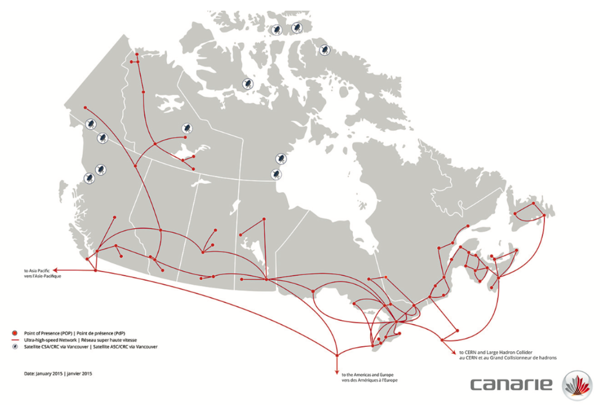
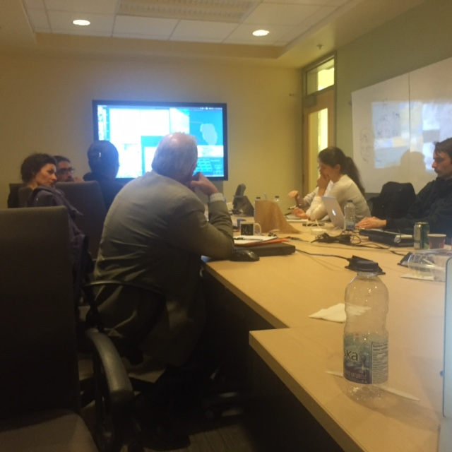
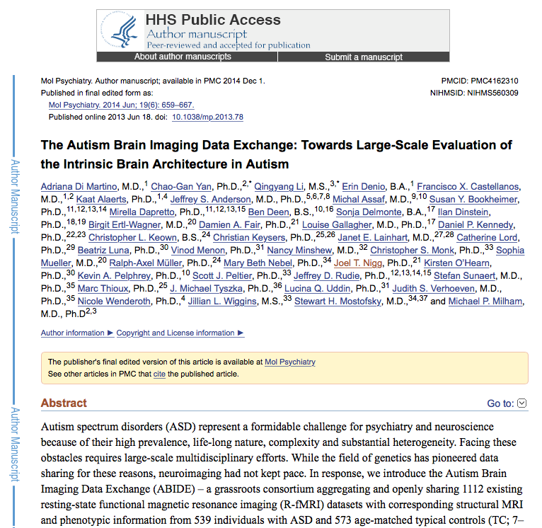
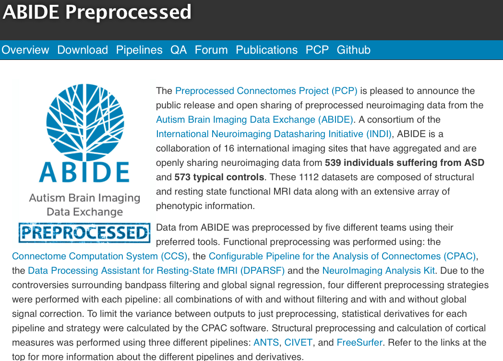
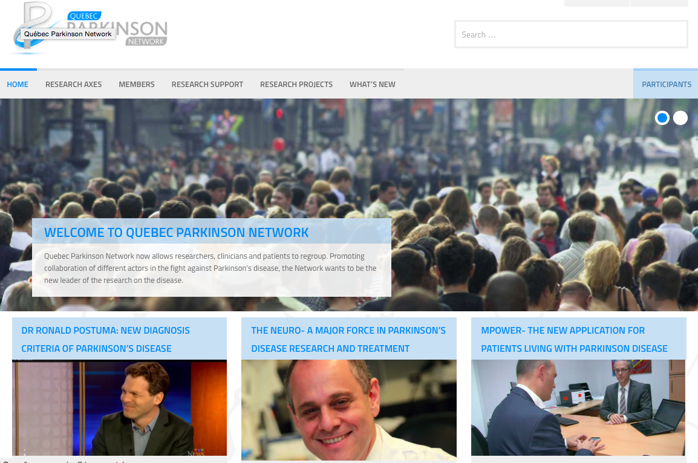
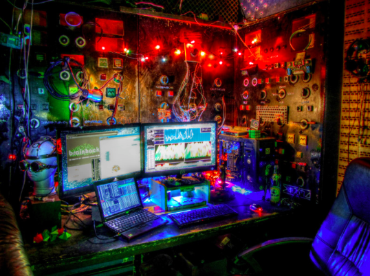
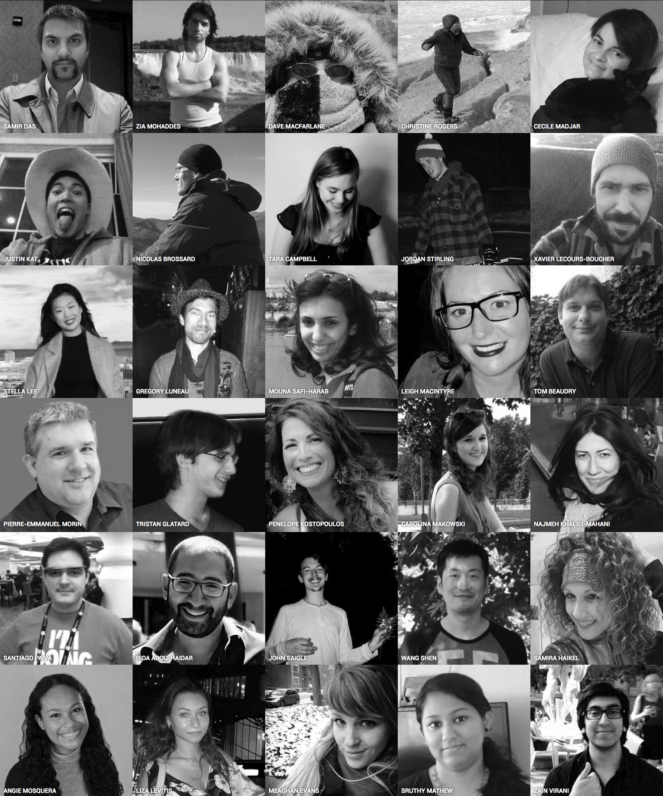

Data sharing - the Good, the Bad and the Open

|

|

|

Today's talk
- Open Science and data sharing
- Plans for Open Science at the MNI
- Why the MNI made this move?
- Changes needed to make Open Science reality
- Examples of tools, datasets, and environments
- LORIS and CBRAIN
- Challenges and Hurdles
What is Data Sharing?
Exchange of information
Datasets
Tools
Standarization
Databases
Collaborations
Conferences, hackathons
Facebook, Google, Twitter, etc.
Image source: http://blog.veritythink.com/post/87880448269/creative-data-sharing-and-open-humanitarianism
Best practices in Data Sharing
Committee on Best Practices in Data Analysis and Sharing (COBIDAS)

|
COBIDAS - Key points
- Experimental Design
- Acquisition Reporting
- Preprocessing Reporting
- Statistical Modeling and Inference
- Results Reporting
- Data sharing
- Reproducibility
Open Science

|

|
Open Science

Cyberinfrastructure

Centralized or Distributed?
Data Sharing Issues
| Benefits | Hurdles |
|---|---|
| It's the future | Fear |
| Reduces waste/duplication | Technical challenges |
| Increased exposure | Privacy concerns |
| Access to larger datasets | Data Harmonization |
| Access to rare data | Interoperability |
| Less attrition | Reproducibility |
| Increased validation | Obtaining ethics |
| Saving Tax $$ | Public dataset not identical |
What changes are necessary to make this reality?
Infrastructure
Standardization
Boutiques

|
Common Ontology for Imaging Data |
API
NeuroImaging Data Model

Format for storing metadata, provenance, processing information
Atlas template building
|  |
Goal: To create standardized JSON metadata to describe atlases For either volumetric or surface atlases Pipelines (e.g.CIVET) can access more atlases for anatomical standardization |
Consolidated datasets
ADNI, ICBM, NIHPD, Allen Mouse Brain, IBIS, Generation-R, ABIDE, ABIDE Preprocessed, ADHD 200, ADHD Preprocessed, Human Connectome Project, OMEGA, UK Biobank, Edinburgh Biobank, BigBrain, Talairach, 1000 Functional Connectomes, Colin 27, MNI 305, 1000 Brains, AAL, ANIMAL, MAVAN, PreventAD, PING, MNI 152, MNI 305, FSL...
So many datasets!
ADNI

|
|

|

|
|
|  |  |

|

|
Quebec Parkinson Network
Tools and Environments
Neurovault, NeuroSynth, CIVET, VIP, Boutiques, Git-Annex, SOLID, BIDS, NiDM, DiCAT, DCMTK, NiPype, ITK, Freesurfer, SPM, FSL, Mobile MRI, 1000 Brains, AAL, BrainCode, GitHub, Amazon Cloud, FSL, IDA, BrainVisa, DICOM Confidential, DockerHub, Gate, CMIND...
So many Tools!

Neurovault Example

BrainBrowser
..a set of web-based 3D visualization tools primarily used for viewing neurological data i.e. MRI scans.
It allows for real-time manipulation and analysis of 3D neuroimaging data through any modern web browser.

|

|
Brainbrowser

TRY ME!
|  |
Important value of hackathons to data sharing initiatives |
Collaborations
What’s involved?
Longitudinal Acquisition, Storage and Curation, Interoperability, Reproducibility, Transfer, Anonymization, Security, Privacy, Ethics, APIs, Validation, Quality Control, Protocol Checking, Preprocessing, Analysis, HPC, Provenance, Ontological Standarization, Data Harmonization, Upgrades, Maintenance, Bug Fixes, User Interface, Javascript, Bootstrap, Tracking, Extensibility, Data Management, Summary Statistics, Workflows, Development, Tool Integration, Data Sharing, Download, Multi-Modal Linking, Querying, Image Processing, Visualization, Networking, System Administration, Partnerships, Funding, HR ...No big deal!
LORIS-CBRAIN INTEGRATION
Benefits vs Challenges

LORIS Dashboard
Heterogenous Data
Imaging Data
1. Acquisition & Storage
2. Visualisation:
Imaging Browser, BrainBrowser3. Quality Control:
Radiological Review Module, DCC MRIData Querying
- Imaging Statistiscs
- Data Querying Tool (DQT)


|

|
|

|
|

|
|
|
Several default tools:
|

|
CBRAIN projects

TRY ME!
NOW
611 users; 199 international
191 sites
299 countries
CBRAIN Computing Resources


NIAK

What's in it for me?
More citations (Piwowar & Vision, 2013)
Access to larger datasets
Greater exposure
Validation of your data
More collaborations
Increased funding
LORIS Biobank instance

LORIS Imaging instance

Open Science Functionality
| Acquisition & Storage | Dissemination & Analysis |
|---|---|
| Organized/Accessible data | Centralized repository |
| Long term storage | Provenance Capture |
| Quality Control mechanisms | API for interoperability |
| Web visualization | Consent is factored in |
| Tablet/Mobile Friendly | User account access control |
| Anonymized automatically | Completely de-identified |
| Cross-modal linking | Cross-study correlation |
| Online Data Querying | Access to high performance computing |
Privacy Concerns


|
 Adrian Thorogood BIC lecture - March 9, 2016
Adrian Thorogood BIC lecture - March 9, 2016

|

Open Science Social
|  |
Thank you!Acknowledgements: Alan Evans, Alex Zijdenbos, Dario Vins, Jonathan Harlap, Matt Charlet, Andrew Corderey, Sebastian Muehlboeck, Reza Adalat, Louis Collins, Vladimir Fonov, Marc Rousseau, Mia Petkova, Rathi Gnanasekaran, David Brownlee, Tarek Sherif, Pierre Rioux, Nic Kassis, Leigh MacIntyre, Claude Lepage, Ilana Leppert, Natasha Beck, Tristan Glatard, Bert Vincent, Lindsay Lewis, Najma Mahani, Elodie Portales-Casamar, Alden Woodward, Sylvain Milot, Jean Francois Malouin, Sylvain Baillet, Daniel Kroetz, Martin Weiss, Mathieu Desrosier, Jason Karamchandani, Amit Bar-Or, Ted Fon, John Brietner, Derek Lo, Patrick Bermudez, Chris Steele, Pamela Patterson and one of my favourites: Pierre Bellec! LORIS team on left (special thanks to Christine Rogers for listening to me.) |